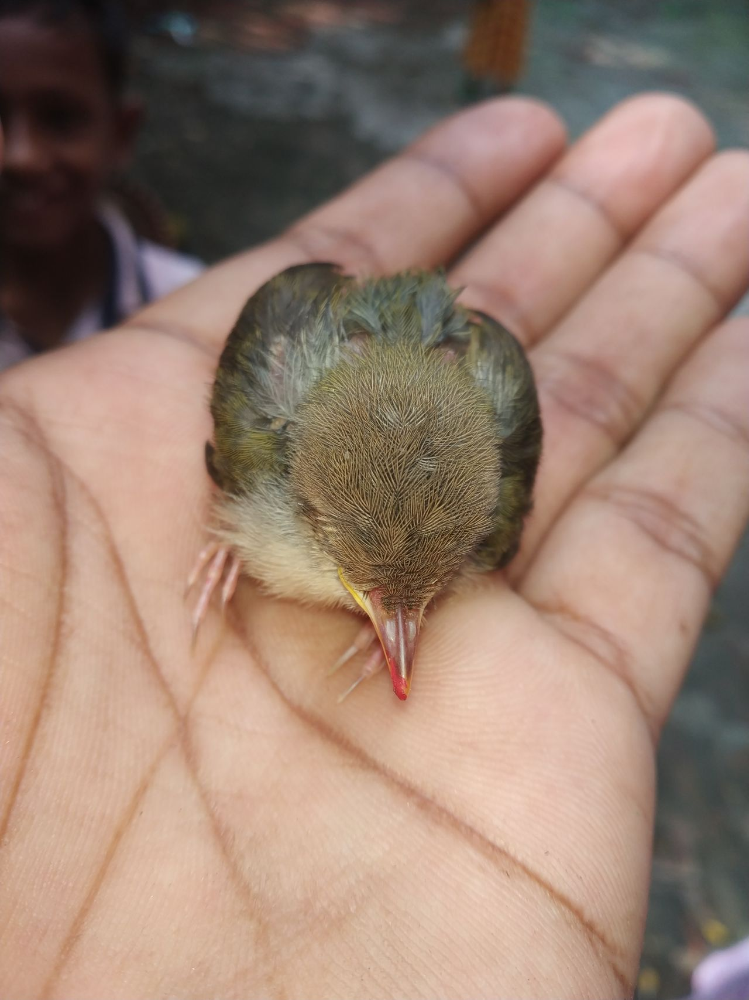
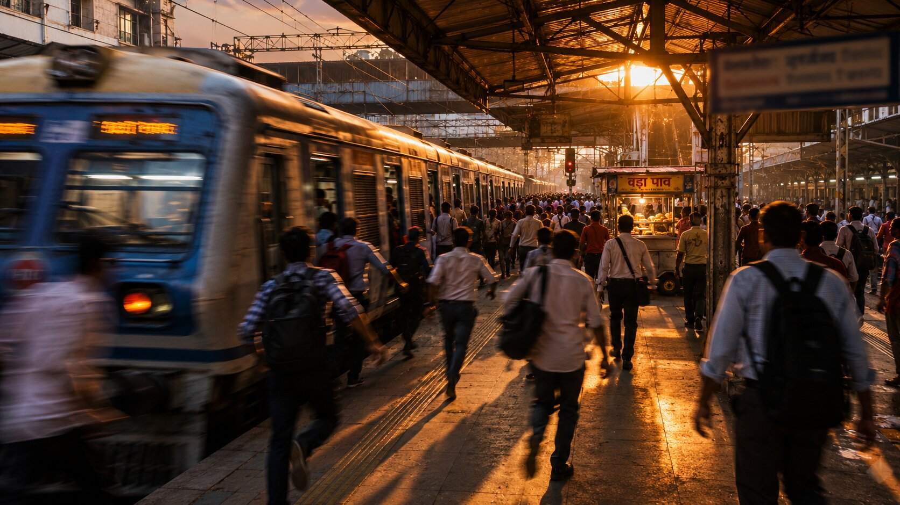
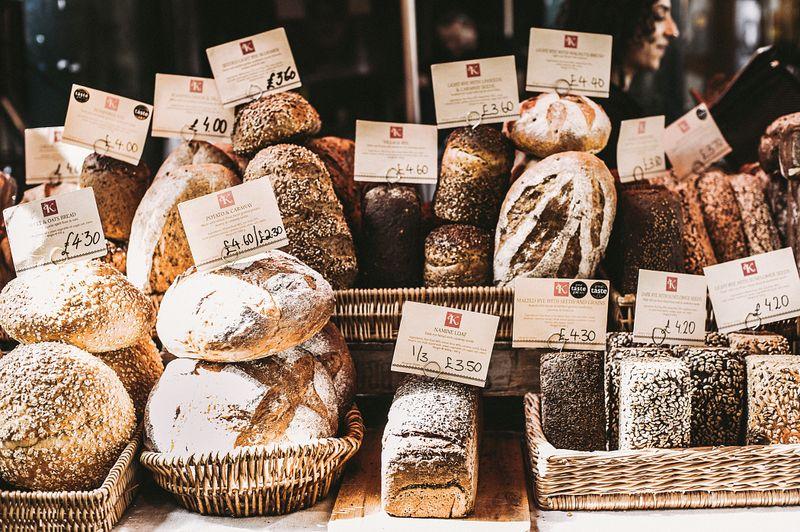
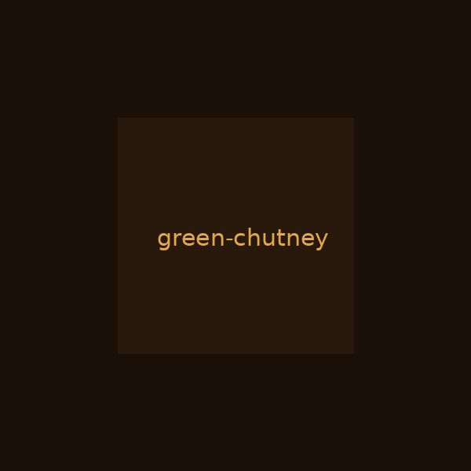
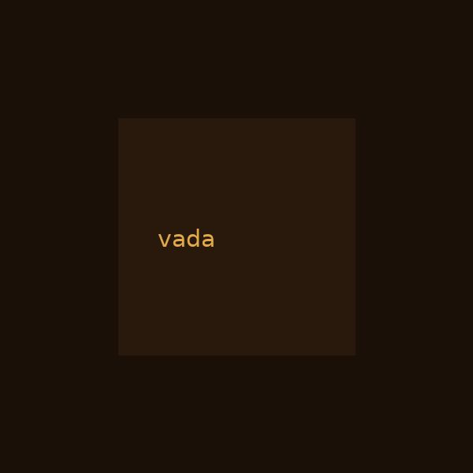
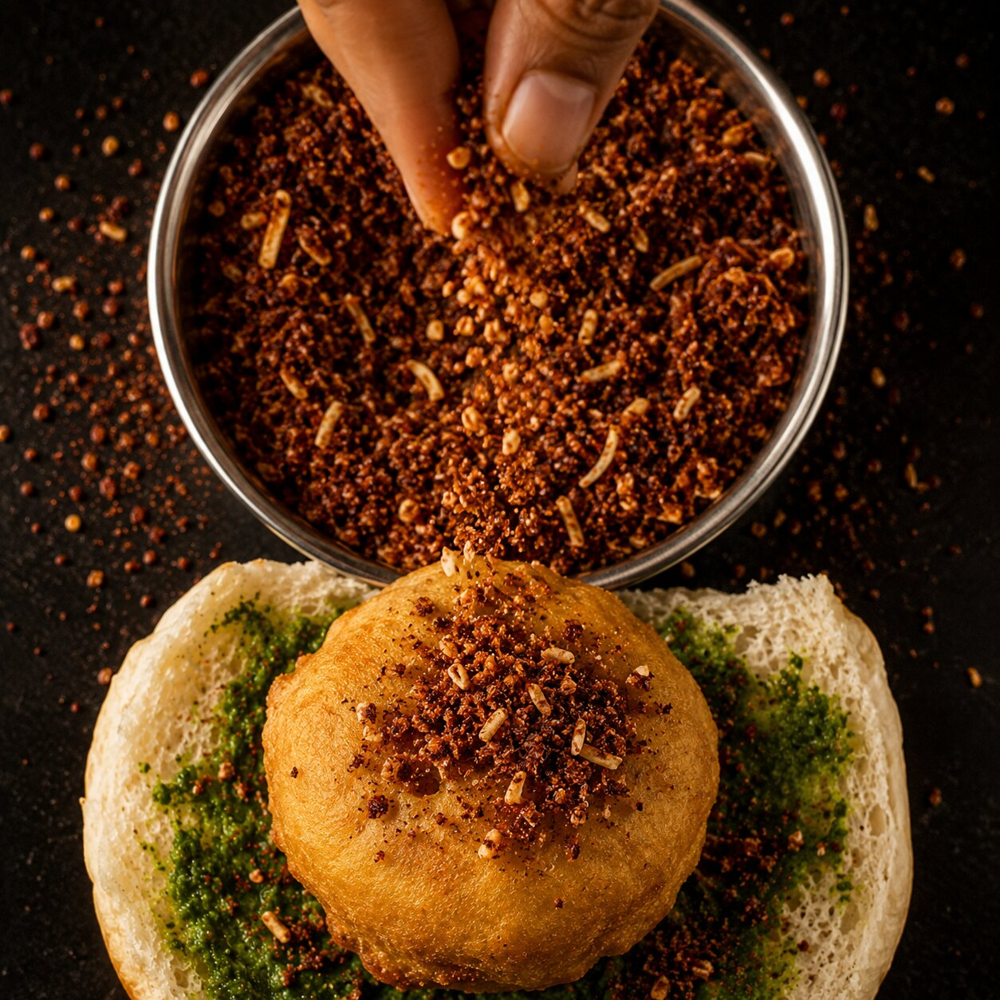
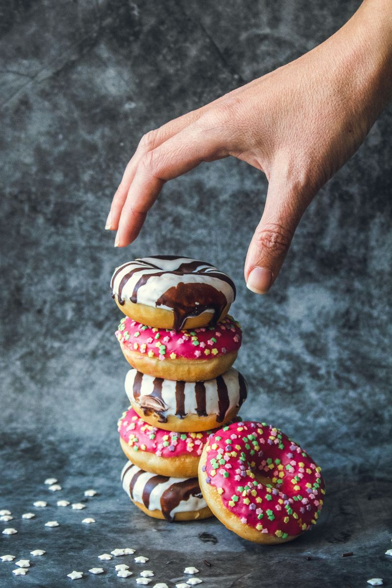

Stand and eat
Vada pav is never eaten sitting down. You stand at the stall, or you walk. There are no tables. There are no chairs. If you sit, you are eating a sandwich. This is not a sandwich.
The revolution that feeds twenty million people. Every single day.
Year invented
Still costs today
Served daily
Time to eat
Mumbai, 1966. Two hundred and fifty thousand men poured out of textile mills every afternoon. They needed food that cost one rupee, took thirty seconds to eat, and could be held in one hand while running for the 5:14 local.
Ashok Vaidya set up a cart outside Dadar station. A boiled potato, mashed with garlic and green chili, coated in gram flour batter, fried until the outside cracked when you bit it. Stuffed into a soft pav with two chutneys. Done.
The mills closed in the 1980s. The workers scattered. The city reinvented itself three times over. But every platform, every street corner, every junction in Mumbai still has a cart just like Ashok's. Sixty years later, the price went from ₹1 to ₹15. Everything else stayed the same.

Warje, Pune. 5:07 PM. College is over.
Ten or fifteen of us would walk out of RMD Sinhgad College of Engineering, bags still heavy with books nobody opened, and head straight to the Warje Vada Pav Center. The stall opened at five. We knew the exact minute.
We were always broke. Not the romantic kind. The real kind. The kind where you count coins for the bus and walk if you're short. But ₹15 could fill you up. Every single evening. Green chutney, fried chili on the side, the pav still warm.
That stall fed us through four years of engineering. Through failed exams and passed ones. Through placement season when half the group got offers and the other half pretended they didn't care.
I earn in millions now. None of it hits the same. Because that ₹15 wasn't just food. It was proof that the day wasn't wasted. That you had friends. That tomorrow you'd be back at the same stall, same circle, same burn on the roof of your mouth.
This page is for the Warje Vada Pav Center. And for every boy who stood in that circle.
Mumbai's local railway carries 7.5 million commuters daily. At every station, without exception, someone is frying vada.

Five steps. Thirty seconds. One perfect bite.





Slice the pav horizontally. Not all the way through. Keep the hinge.
There is no secret. There is only practice.
Vada pav is never eaten sitting down. You stand at the stall, or you walk. There are no tables. There are no chairs. If you sit, you are eating a sandwich. This is not a sandwich.
It is served on a torn square of yesterday's Marathi newspaper. The ink is probably not food-safe. Nobody has ever cared. The newspaper absorbs the oil and becomes part of the experience.
The vendor will ask: "Mirchi?" If you say yes, you get a whole fried green chili on the side. It is a test. The locals eat it in one bite without blinking. You don't have to. But you should try at least once.
A tech CEO earning crores and a rickshaw driver earning ₹500/day pay the same price. Same hands make it. Same newspaper holds it. Same burn on the roof of the mouth. This is Mumbai's only truly classless space.
You will tell yourself you are only having one. You will have two. Everyone has two. The second one is already being assembled while you're eating the first. The vendor knows.
The best vada pav is eaten in the 45 seconds between buying it and boarding the train. Hot vada, cold platform air, the horn of the departing local. That's the full experience. Everything else is a compromise.
खाल्ला का?
"Khaalya ka?"
It means "have you eaten?" in Marathi. But it never really means that. It means: I thought about you. Are you okay? Come over, there's food. It is how twenty million people say I love you without ever saying I love you.